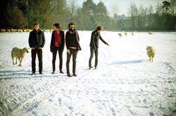

-
Solution 1: Border-radius 50%

Suporta box-shadow. Para fazer uma máscara circular,
é preciso que a imagem seja quadrada
-
Solution 2: SVG mask
Elegante e flexível. porém o suporte não é amplo e necessita de código SVG extra.
-
Solution 3: Radial gradient mask
Bem flexível (css puro) e fácil de manipular, porém fica com serrilhado e não aceita box-shadow.